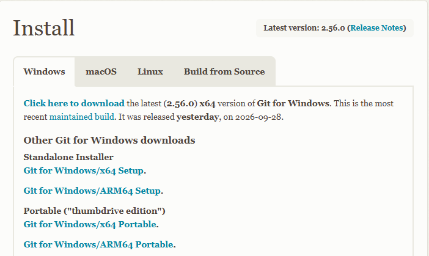
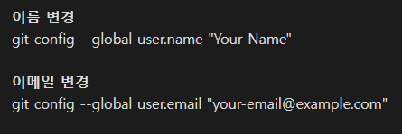
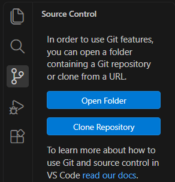
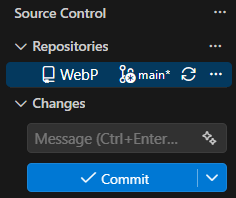
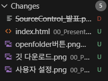
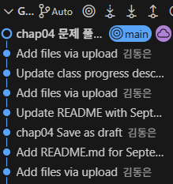
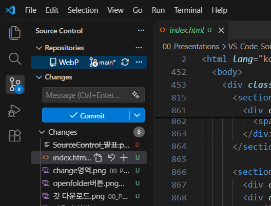
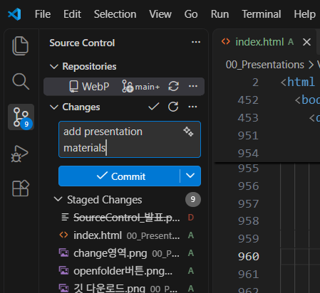
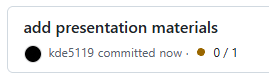
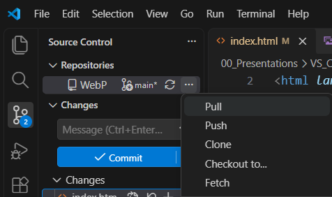

실습
GitHub Repository Clone부터 시작하기
실제 GitHub Repository를 이용해 작업 과정을 확인해보겠습니다.
# GitHub → Code → 주소 복사
VS Code → Clone Repository → URL 입력
VS Code → Clone Repository → URL 입력
Source Control이란?
GitHub Repository와 Commit / Push
실습으로 전체 과정 확인
Git의 상태와 변경 내용을 화면에서 직접 확인하면서 작업할 수 있습니다.
PC에 Git이 설치되어 있어야 합니다.

Commit에 사용할 이름과 이메일을 설정합니다.

GitHub에 이미 있는 Repository를 PC로 복사합니다.
현재 PC의 폴더를 새로운 Git Repository로 시작합니다.
이미 Git Repository인 폴더를 VS Code에서 엽니다.



Commit 메시지를 입력하고 중앙의 Commit 버튼으로 기록합니다.
아직 Stage하지 않은 변경사항이 표시됩니다.
기존 파일이 수정되었습니다.
Git이 아직 추적하지 않는 파일입니다.
Stage된 새 파일입니다.
파일이 삭제되었습니다.
변경된 파일을 확인합니다.
이번 Commit에 넣을 변경사항을 선택합니다.
메시지를 작성하고 로컬 저장소에 기록합니다.
내 PC에서 만든 Commit
원격 저장소의 변경사항
로컬 Commit을 GitHub로 업로드
GitHub의 변경사항을 로컬에 반영
로컬과 원격의 변경사항을 동기화
VS Code에서 확인할 파일을 선택합니다.
해당 파일의 과거 기록을 확인합니다.
Commit 시점과 과거 변경 과정을 볼 수 있습니다.
언제 Commit이 만들어졌는지, 특정 파일이 과거에 어떻게 변경되어 왔는지 확인할 수 있습니다.

GUI의 기능과 터미널 명령어를 연결해서 이해하면 Git의 동작 방식을 파악하기 용이합니다.
버그, 개선사항, 작업할 내용을 관리합니다.
독립적인 작업 공간을 만들어 작업할 수 있습니다.
변경사항을 검토하고 병합하는 방식으로 협업합니다.
실제 GitHub Repository를 이용해 작업 과정을 확인해보겠습니다.

로컬 작업공간에서 파일을 수정합니다.
변경사항을 확인합니다.
변경 상태가 파일 옆에 표시됩니다.

Changes 옆의 플러스 버튼으로 필요한 변경사항을 Stage합니다.
파일이 Staged Changes로 이동합니다.
메시지를 작성하고 Commit합니다.

Commit 완료
Push 후 Repository에서 확인

원격 Repository에 변경사항이 생겼다고 가정합니다.
Source Control의 점 세 개 메뉴에서 Pull을 선택합니다.
원격 변경사항이 현재 Branch에 반영됩니다.
Source Control을 통해 GitHub와 로컬 저장소를 연결하고
변경사항을
관리하는 과정을 살펴보았습니다.
발표 내용을 준비하면서 참고한 자료를 정리했습니다.